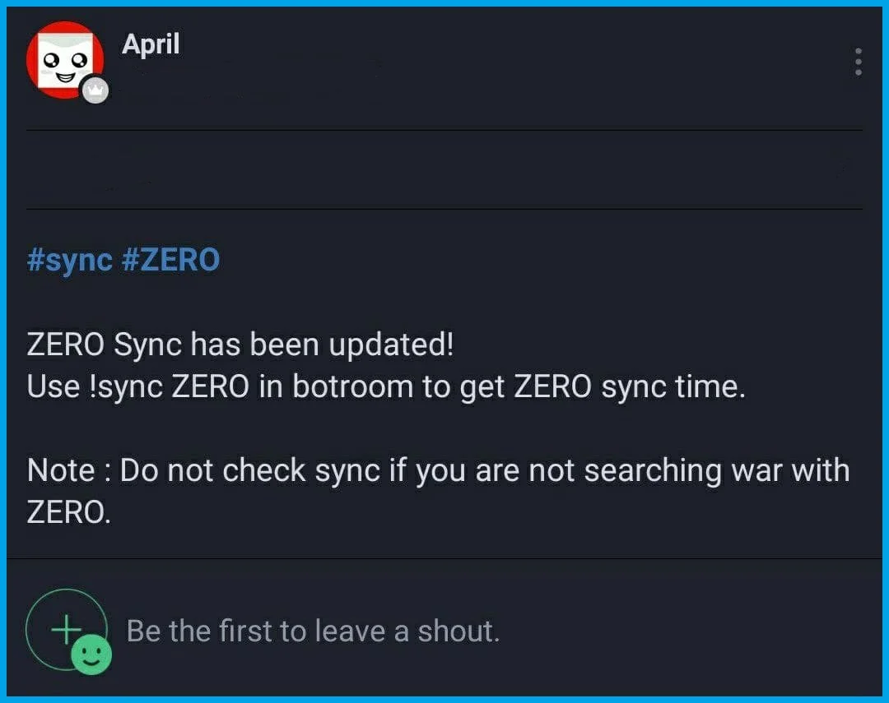
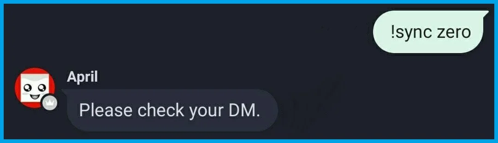
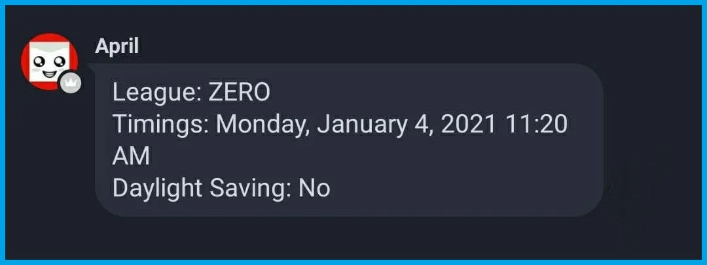
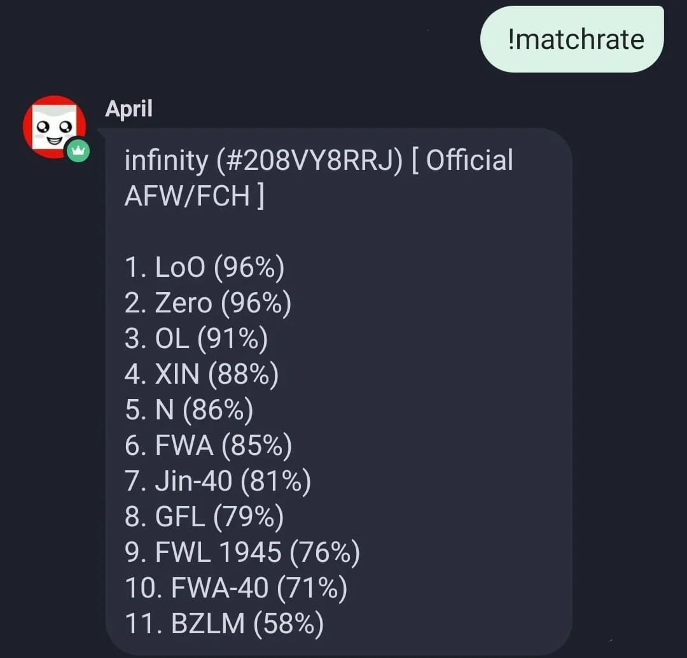

Anti Farm Wars & Farm Clan Hunters is a group of over 200+ clans (Climbing Up everyday) whose primary goal is to match against Farming League Clans to seek easy wins, Green warlog and War Win Streaks.
Joining Anti Farm Wars is easy. You need a clan with 45+ members. Request at Entry band. An admin will assist you. You need to share all the details asked and then you will be invited to Audit Band for audits and once you pass audit, You will be Invited to main bands.
Audit Band is Band managed by Admins, Where sync times are given to clan and Clans are supposed to score 125+ stars in the number of wars alloted by Admins
The number of wars alloted to clan may differ upon different conditions
Unlike Farm League Clans, We do not have any specific Locations, Emojis or description.
However, You can check our proud clans on our website
This site shows Associations of All Official, Entry and Former Anti Farm Wars and Farm Clan Hunters Clans. This site also shows other amazing details related to Clash Of Clans such as TH Composition, War Details, CWL Details (More to be added)
The farming clan will reflect one of these following information
| Name | Clan Location | Emoji/ KeyWord |
|---|---|---|
| FWA-Farm War Alliance | Lesotho | 💎FWA💎 |
| 1945/FWL | Nauru | 🍀1945/FWL🍀 |
| BZLM/GFL | Guyana | 🌎不战联盟/ BZLM/ GFL🌎 |
| OL-Orange League | Saint Martin | 🍊O/ OL/ O盟🍊 |
| LoO-League of Orange | Vatican City | 🍊O盟/ 积分🍊 |
| Xin League | Vatican City | 🌸鑫盟🌸 |
| N/G/Y League | Monaco | N盟/ G盟/ Y盟 |
| Zero League | Benin | Z盟/ Zero盟 |
As a clan member you are responsible to set up an anti 3🌟 base, Help in filling Clan Castles, Using Both attacks, Checking all Clan Castles are filled and help other clan mates regarding strategies to use in war attacks.
As a leader you are responsible of checking syncs regularly and starting wars In your clan. You are also responsible for making sure if your opponent is Farming clan or hunting clan. For any queries, you must contact Admin team to solve them. Clan Representatives are responsible for losing against any Farming clans. Keep toughest war bases active and smash Farming clans.
Help Us Keep Our Band Safe
❌Any and all changes to your clan rep leadership team should be reported right away.
❌If a rep LEAVES your clan, or NO longer wishes to be a clan representative, please let us know so we can update our records.
Band is the app where all the operations are based. Our primary Communication app.
There are different Chatrooms for different purposes
Like others we don't post sync times on BAND Wall. We have our customized bot and we use April to deliver syncs to Clan Representatives
When a sync time is updated, April will post a notice on BAND
Once it's posted, Go to Botroom and use the command mention in the post.
" Example: !sync zero "
Then April will DM you the sync time
❌The sync time will be in your own's country timezone.
❌Do not check syncs of league which you are not hunting.
Chances of you matching a Farm league clan is equal the chances of their own league clans matching themselves. But due to same weight or sometimes wrong weight, you may mismatch or match a hunting clan. Please read How Do I Recognize Other Farm Leagues?
There can be multiple reasons for a mismatch
To be sure about your composition, You can use our Bot to know if your composition is good for the league you are hunting
"Use: !matchrate"
And if yet continue to mismatch, Feel free to contact an admin
BEWARE of the FAKE AFW/FCH and other SYNC STALKING BANDS!!!
They lie and cheat and they are despicable
If you get invitation from any sync stalking bands...